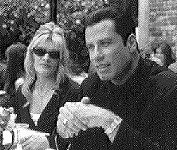

Contents | Features | Reviews | Books | Archives | Store |
 |
|
| Movie Credits | Buy It! |
Get Shorty
Review by Carrie Gorringe
|  | Directed by Barry Sonnenfeld. Starring John Travolta, From the novel by Elmore Leonard. |
The first thing the audience learns about mob enforcer Ernesto "Chili" Palmer (Travolta) is that he likes to be in charge. When his expensive leather jacket (like the one Al Pacino wore in the film Serpico) is "borrowed" by mob figure Ray "Bones" Barboni (Farina), Chili feels obliged to go over and break Bones’ nose for his presumptuousness. Naturally, Bones doesn’t feel that such behavior was warranted, and wants revenge. His opportunity comes when Chili’s boss dies and Bones assumes control over Chili. Bones then demands that Chili locate a deadbeat who is behind in his payments to Bones’ loansharking operations. After information leads Chili to Las Vegas, he is informed that the individual he wants is in Los Angeles. He also acquires another collection job, this one for a casino which wants $200,000 from a minor-league film producer, Harry Zimm (Hackman). Zimm has obtained this $200,000 under false pretenses; what was supposed to be an investment in one of Zimm’s grade-Z horror pictures by drug kingpin Bo Catlett (Lindo) has now been transformed into markers. Chili finds Zimm at the home of starlet Karen Flores (Russo), a scream-queen who has been a mainstay of Zimm’s pictures. The rest of the film finds Chili trying to become a producer and trying to settle accounts with Bones, while Zimm tries to avoid the consequences of cheating Catlett while finding financing for the film he believes will vault him into the ranks of what are referred to as the "major players" ("It’ll be my Driving Miss Daisy," Zimm explains). Flores, for her part, holds the key to Zimm’s success; as the ex-wife of two-time Academy-Award nominee, Martin Weir (DeVito), she must persuade him to appear in Zimm’s film so that Zimm can get the backing of a major studio, and, if she can score a little extra influence for herself in the process, so much the better. Perhaps it will get her out of those painful push-up bras that are so necessary to the plot development of Zimm’s horror films...
Get Shorty is a good film. In fact, it’s a very, very good film, so good that it restores one’s faith in Hollywood filmmaking generally after a rather dismal slate of summer and fall releases. It also restores the belief that Barry Sonnenfeld (he of the Addams Family pictures) actually has a feel for comedy; the proof lies in the fact that Sonnenfeld does not significantly alter (except at the end) the content and essence of Leonard’s novel. The novel is a brilliant mix of self-reflexivity and an overlay of irony; the story that Chili tries to pitch as a movie idea to Zimm is the actual narrative of the film recounted to the point at which he and Zimm begin talking about it. This self-conscious approach can, if injudiciously employed, quickly appear to be self-indulgent; in such a case, it is usually employed as an "artistic" device meant to conceal major conceptual shortcomings. Granted, there are some rather large holes in the narrative, but, taken as a whole, the film is such frothy, almost infectious, fun that the audience just wants to bounce along with it. The amazingly cool soundtrack, featuring diverse but related artists like Count Basie, Morphine and John Lurie, adds to this sense of hipness, making even a dinosaur like Harry Zimm seem up-to-date.
Get Shorty, whether in film or book form, is a wonderful satire about the egos involved in the movie industry. Of course, enjoyment of the film rests upon an assumption that the audience has or can muster a certain degree of sympathy for people whose raison d’être is a preoccupation with the self to a degree that is not only excruciating, but also flagrantly overt. Naturally, when all an actor has to sell is his or herself, and when visibility (the old "seeing-and-being-seen-in-all-the-right-places" gambit) is essential to obtaining success, and if success is power and power is access to influence, then the whole process, especially for those at the bottom of the Hollywood heap, can seem like nothing more than a zero-sum game being played in an ever-downward spiral. Hence, an ability to create a perception of success can be more important than actual success itself. Everybody in this film, be it mob figure or Hollywood figure, has an angle, and Get Shorty does more than suggest that the difference between the two mafias is solely a product of the imagination. A comparison between this film and Robert Altman’s The Player is instructive, since they deal with the ethical vagaries of Hollywood; unlike Altman’s rather more stridently didactic piece, Get Shorty skewers the pretentiousness of filmmaking gently, but no less effectively.
Everything works in Get Shorty, especially the performances. Travolta demonstrates that his work in Pulp Fiction wasn’t an aberration. He doesn’t merely embody Chili Palmer; he has seemingly absorbed the character’s sensibilities into his own DNA code. When Travolta appears on screen, it is as if the other characters and even the surroundings part to allow him to pass, so in awe do they seem at the specter of such low-key but high-voltage self-confidence. Arguably, the role of Chili Palmer could be nothing more than a continuation of his role in Pulp Fiction but, if this is nothing more than a one-note role, Travolta blows that note with such loving skill and tenacity that he deserves an Oscar nod. His talents having been wasted in the execrableness of Clockers, Get Shorty gives Delroy Lindo a great opportunity to take charge, and he does. Lindo’s portrayal of drug-dealer and Hollywood wannabe Bo Catlett has exactly the right mix of silkiness and menace. With any luck, he will join Denzel Washington and Morgan Freeman in that newly-minted and all-too-sparsely-populated realm of African-American actors who can make a film bankable. Hackman effortlessly projects the world-weary cynicism and pathetic hopefulness of a would-be Hollywood player who has been on the fringes too long. Zimm is what Roger Corman might have become had the series of Poe films and Little Shop of Horrors not provided Corman with a patina of critical respectability to add to his talents as a budget-conscious filmmaker. Russo likewise provides Karen Flores with that same blend of cynicism and pathos; despite Karen’s "been there, done that" attitude, Russo’s portrayal allows Karen to have a tiny core of optimism against all odds that softens the edges of her personality, and it is to Russo’s credit that she keeps everything nicely in balance. Farina is hysterically funny as a thug who alternates between ineffectual stupidity laced with self-pity and viciousness, both of which are girded by an overly-inflated sense of his own self-importance and invincibility. Never mind the gang that couldn’t shoot straight; Bones is the gang that couldn’t think straight -- all by himself.
Add to the above mixture wonderful cameo performances by Bette Midler and Harvey Keitel, and Get Shorty is great entertainment for a dreary afternoon.
Contents | Features
| Reviews | News | Archives | Store
Copyright © 1999 by Nitrate Productions, Inc. All Rights Reserved.